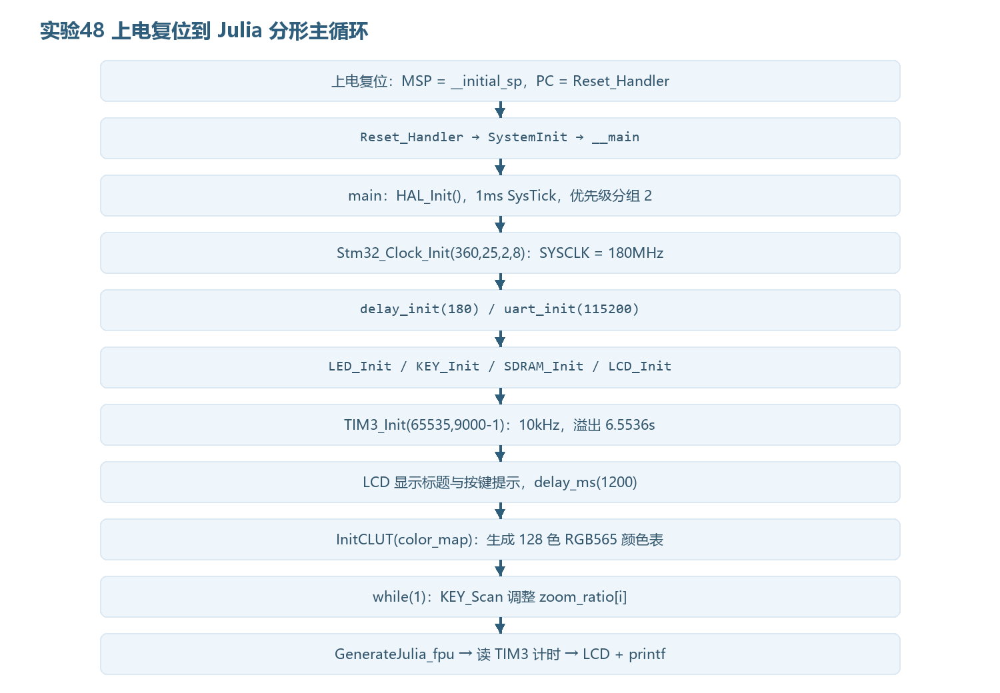
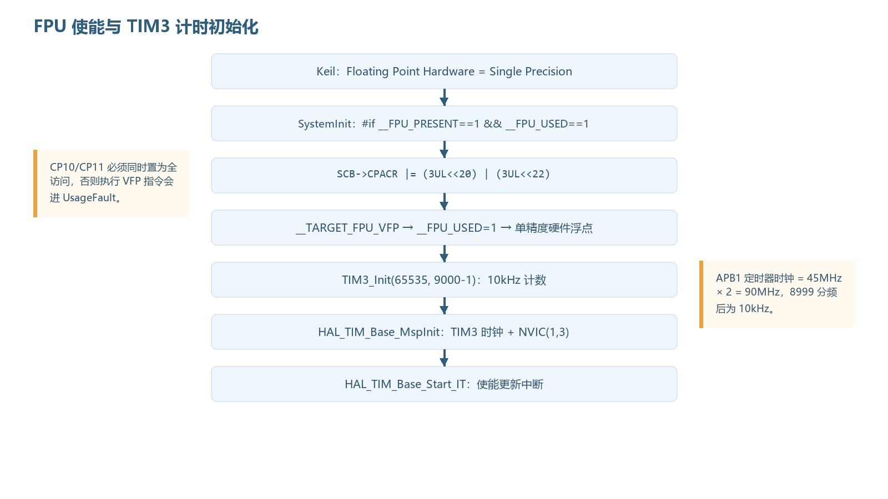
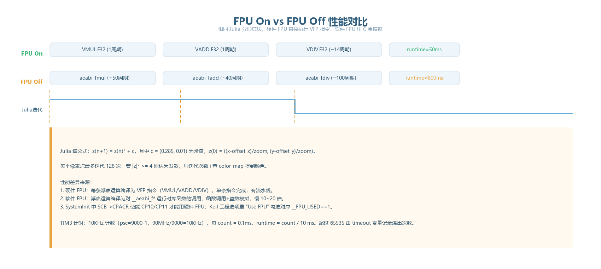
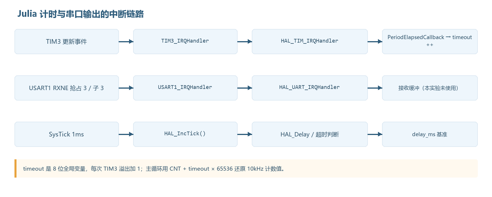

01 工程概述与硬件资源
不接任何外部模块，只用 LCD 和按键，把 Cortex-M4 的浮点能力单独量出来
实验48 在 800×480 的 RGB 屏上逐像素迭代 Julia 集。每个像素最多做 128 次复数迭代，每次迭代包含 2 次乘法、2 次加法、1 次比较，整屏约 384000 个像素，总量在 4900 万次迭代量级。这个负载足够让“软件浮点”和“硬件 FPU”拉开数量级差距。
| 资源 | 配置 | 用途 |
|---|---|---|
| STM32F429IGT6 | Cortex-M4F，180MHz | 单精度硬件浮点（FPv4-SP） |
| LCD | RGB565，800×480 | 逐行输出分形图像 |
| SDRAM | FMC Bank1，32MB | LTDC 显存与行缓冲 |
| KEY0 / KEY2 | PE4 / PE3 | 缩放因子加 / 减 |
| WK_UP | PA0 | 自动 / 手动切换 |
| USART1 | 115200-8-N-1 | 打印 FPU 模式、缩放、耗时 |
| TIM3 | 10kHz 计数 | 测量单帧生成时间 |
ITERATION = 128
REAL_CONSTANT = 0.285f
IMG_CONSTANT = 0.01f
逃逸半径 4
缩放 100% ~ 2000%
为什么选 Julia 集做 FPU 测试
- 纯浮点运算，几乎不访问外部存储，能排除 SD 卡和文件系统干扰。
- 迭代次数固定，耗时与画面内容无关，便于横向比较。
- 结果直接可见：颜色由逃逸迭代次数决定，算错会立刻花屏。
工程目录里有 48_1（开启硬件 FPU）和 48_2（关闭硬件 FPU）两个版本，源码几乎相同，差别在 Keil 的浮点选项。
02 启动流程总览
初始化到 LCD 可用为止，然后进入“按键调缩放 + 逐帧重算”的循环
int main(void)
{
u8 key;
u8 i=0;
u8 autorun=0;
float time;
u8 buf[50];
HAL_Init(); // 1ms 时基
Stm32_Clock_Init(360,25,2,8); // SYSCLK = 180MHz
delay_init(180); // fac_us = 180
uart_init(115200); // printf 输出
LED_Init(); // LED0 翻转表示一帧完成
KEY_Init(); // KEY0/KEY2/WK_UP
SDRAM_Init(); // 显存
LCD_Init(); // LTDC 面板参数
TIM3_Init(65535,9000-1); // 10kHz，6.5536s 溢出
POINT_COLOR=RED;
LCD_ShowString(30,50,200,16,16,"Apollo STM32F4/F7");
LCD_ShowString(30,70,200,16,16,"FPU TEST");
LCD_ShowString(30,90,200,16,16,"ATOM@ALIENTEK");
LCD_ShowString(30,110,200,16,16,"2016/1/17");
LCD_ShowString(30,130,200,16,16,"KEY0:+ KEY2:-");
LCD_ShowString(30,150,200,16,16,"KEY_UP:AUTO/MANUL");
delay_ms(1200); // 让标题停留 1.2s
POINT_COLOR=BLUE;
InitCLUT(color_map); // 预生成 128 色
while(1)
{
key=KEY_Scan(0); // 不支持连按
switch(key)
{
case KEY0_PRES: // 放大
i++;
if(i>sizeof(zoom_ratio)/2-1)i=0;
break;
case KEY2_PRES: // 缩小
if(i)i--;
else i=sizeof(zoom_ratio)/2-1;
break;
case WKUP_PRES: // 自动/手动
autorun=!autorun;
break;
}
}
}
启动顺序的两个依赖
LCD_Init()依赖 SDRAM 显存，所以 SDRAM 必须在前。InitCLUT()必须在第一次GenerateJulia_fpu()之前，否则颜色表全是 0。- TIM3 在 LCD 之后初始化，避免测量代码误用未配置的句柄。
这段代码省略了主循环后半段的绘图与计时，下一节和 08 节会展开。
03 状态交互演示
先看复位到出图的完整链路，再点按钮体会缩放因子对运算量的影响

缩放与自动模式演示（对应 KEY0 / KEY2 / WK_UP）
自动轮播
硬件 FPU
缩放 100% 每帧约 4915 万次迭代 模式：手动
演示与源码的对应关系
- KEY0：
i++，越界回到 0；KEY2：i--，到 0 后回到末尾。 - WK_UP：
autorun=!autorun，自动模式下每帧i++。 - 缩放因子来自
zoom_ratio[]，值越大，坐标范围越小，图形被放大。
迭代总量按 800×480×128 估算，实际会因提前逃逸而小于这个上限。
04 启动文件与复位入口
FPU 能不能用，第一道开关其实在启动文件和编译器选项里
startup_stm32f429xx.s 的复位入口先调用 SystemInit，再进入 C 库的 __main。FPU 是否被打开，取决于 __FPU_PRESENT 与 __FPU_USED 两个宏。
Reset_Handler PROC
EXPORT Reset_Handler [WEAK]
IMPORT SystemInit
IMPORT __main
LDR R0, =SystemInit
BLX R0 // 检查 FPU 宏，决定是否写 CPACR
LDR R0, =__main
BX R0 // C 库初始化后调用 main
ENDP
ALIGN
IF :DEF:__MICROLIB
EXPORT __initial_sp
EXPORT __heap_base
EXPORT __heap_limit
ELSE
IMPORT __use_two_region_memory
EXPORT __user_initial_stackheap
__user_initial_stackheap
LDR R0, = Heap_Mem
LDR R1, =(Stack_Mem + Stack_Size)
LDR R2, = (Heap_Mem + Heap_Size)
LDR R3, = Stack_Mem
BX LR
ENDIF
两个宏的分工
__FPU_PRESENT由芯片头文件给出，F429 固定为 1，表示“硬件上有 FPU”。__FPU_USED由编译器选项决定，只有勾选 FPU 时才为 1。- 两者同时为 1，
SystemInit才会执行SCB->CPACR的使能语句。
只改代码不改编译选项，
__FPU_USED 仍然是 0；此时即使手写 CPACR，编译器也不会生成 VFP 指令。05 系统时钟与 HAL 初始化
180MHz 是 FPU 发挥性能的前提，CPACR 的 CP10/CP11 是全访问开关
void SystemInit(void)
{
#if (__FPU_PRESENT == 1) && (__FPU_USED == 1)
SCB->CPACR |= ((3UL << 10*2)|(3UL << 11*2)); // CP10/CP11 全访问
#endif
RCC->CR |= (uint32_t)0x00000001; // 打开 HSI
RCC->CFGR = 0x00000000; // 时钟源切回 HSI
RCC->CR &= (uint32_t)0xFEF6FFFF; // 关闭 PLL/HSE/CSS
RCC->PLLCFGR = 0x24003010; // PLL 复位默认值
RCC->CR &= (uint32_t)0xFFFBFFFF; // 关闭 HSE bypass
RCC->CFGR &= ~RCC_CFGR_SW; // 选择 HSI 作为系统时钟
RCC->CIR = 0x00000000; // 清中断标志
}
HAL_StatusTypeDef HAL_Init(void)
{
__HAL_FLASH_INSTRUCTION_CACHE_ENABLE();
__HAL_FLASH_DATA_CACHE_ENABLE();
__HAL_FLASH_PREFETCH_BUFFER_ENABLE();
HAL_NVIC_SetPriorityGrouping(NVIC_PRIORITYGROUP_2); // 2 位抢占
HAL_InitTick(TICK_INT_PRIORITY); // SysTick 1ms
HAL_MspInit();
return HAL_OK;
}
void Stm32_Clock_Init(u32 plln,u32 pllm,u32 pllp,u32 pllq)
{
__HAL_RCC_PWR_CLK_ENABLE();
__HAL_PWR_VOLTAGESCALING_CONFIG(PWR_REGULATOR_VOLTAGE_SCALE1);
RCC_OscInitStructure.PLL.PLLM=pllm; // 25
RCC_OscInitStructure.PLL.PLLN=plln; // 360
RCC_OscInitStructure.PLL.PLLP=pllp; // 2 → 180MHz
RCC_OscInitStructure.PLL.PLLQ=pllq; // 8 → 45MHz
HAL_RCC_OscConfig(&RCC_OscInitStructure);
HAL_PWREx_EnableOverDrive(); // 180MHz 必须开 Over-Drive
HAL_RCC_ClockConfig(&RCC_ClkInitStructure,FLASH_LATENCY_5);
}
FPU 与主频是两件事
- CPACR 只负责“允许执行 VFP 指令”，不负责性能。
- 180MHz 决定每秒能执行多少条指令；FPU 决定一条浮点乘加用几个周期。
- 缺任何一个，Julia 都会明显变慢：关 FPU 走软件库，主频低则整体变慢。
SystemInit 里关闭 PLL 后，SYSCLK 回到 HSI 16MHz；所以 HAL_Init 的 1ms 时基是在 16MHz 下建立的，随后才切到 180MHz。
06 延时、串口与基础驱动
delay 与 printf 都是阻塞的，但在这页只是辅助，不进入逐像素循环
void delay_init(u8 SYSCLK)
{
HAL_SYSTICK_CLKSourceConfig(SYSTICK_CLKSOURCE_HCLK); // SysTick 走 HCLK
fac_us=SYSCLK; // 1us = 180 个计数
}
void uart_init(u32 bound)
{
UART1_Handler.Instance=USART1;
UART1_Handler.Init.BaudRate=bound; // 115200
UART1_Handler.Init.WordLength=UART_WORDLENGTH_8B;
UART1_Handler.Init.StopBits=UART_STOPBITS_1;
UART1_Handler.Init.Parity=UART_PARITY_NONE;
UART1_Handler.Init.Mode=UART_MODE_TX_RX;
HAL_UART_Init(&UART1_Handler);
}
int fputc(int ch, FILE *f)
{
while((USART1->SR&0X40)==0); // 等 TXE
USART1->DR=(u8)ch;
return ch;
}
为什么不用 delay_us 做计时
delay_us是阻塞忙等，会把 CPU 时间算进测量结果。- 本实验用 TIM3 硬件计数器，只读寄存器，不干扰运算。
- 串口打印只在每帧结束后执行一次，对总耗时影响很小。
printf 的重定向依赖
fputc，不需要勾选 MicroLIB；若改用 MicroLIB，需要在工程选项里同时确认半主机设置。07 核心外设初始化：FPU 与 TIM3
FPU 由编译器选项和 CPACR 共同使能，TIM3 提供 10kHz 的硬件秒表

#if __FPU_USED==1 #define SCORE_FPU_MODE "FPU On" // 编译期就能确定 #else #define SCORE_FPU_MODE "FPU Off" #endif void TIM3_Init(u16 arr,u16 psc) { TIM3_Handler.Instance=TIM3; // 通用定时器 3 TIM3_Handler.Init.Prescaler=psc; // 8999 TIM3_Handler.Init.CounterMode=TIM_COUNTERMODE_UP; // 向上计数 TIM3_Handler.Init.Period=arr; // 65535 TIM3_Handler.Init.ClockDivision=TIM_CLOCKDIVISION_DIV1; HAL_TIM_Base_Init(&TIM3_Handler); HAL_TIM_Base_Start_IT(&TIM3_Handler); // 开更新中断 } void HAL_TIM_Base_MspInit(TIM_HandleTypeDef *htim) { __HAL_RCC_TIM3_CLK_ENABLE(); // TIM3 时钟 HAL_NVIC_SetPriority(TIM3_IRQn,1,3); // 抢占 1，子优先级 3 HAL_NVIC_EnableIRQ(TIM3_IRQn); }
10kHz 是怎么来的
- TIM3 挂在 APB1，APB1 = 45MHz，定时器时钟 = 90MHz。
- 90MHz / (8999 + 1) = 10kHz，即每个计数 100us。
- 溢出周期 = 65536 / 10kHz = 6.5536s，所以需要
timeout记录溢出次数。
48_2 工程把 Keil 的 Floating Point Hardware 改成不使用（uvprojx 中 RvdsVP=1），因此
__FPU_USED 为 0，打印结果会变成 “FPU Off”。08 时序与数据流
一帧 = 384000 个像素 × 最多 128 次迭代，计时窗口只包住 GenerateJulia_fpu

LCD_Set_Window(0,0,lcddev.width,lcddev.height); // 整屏窗口 LCD_WriteRAM_Prepare(); // 准备写显存 __HAL_TIM_SET_COUNTER(&TIM3_Handler,0); // 计数器清零 timeout=0; // 溢出次数清零 GenerateJulia_fpu(lcddev.width,lcddev.height, lcddev.width/2,lcddev.height/2, zoom_ratio[i]); // 逐像素迭代 time=__HAL_TIM_GET_COUNTER(&TIM3_Handler) +(u32)timeout*65536; // 还原 10kHz 计数 sprintf((char*)buf,"%s: zoom:%d runtime:%0.1fms\r\n", SCORE_FPU_MODE,zoom_ratio[i],time/10); // 计数/10 = ms LCD_ShowString(5,lcddev.height-5-12, lcddev.width-5,12,12,buf); printf("%s",buf); // 同步输出到串口
计时公式
- 10kHz 下 1 个计数 = 0.1ms，所以
time/10才是毫秒。 timeout是 8 位变量，单次超时上限 255 × 6.5536s ≈ 1671s。- 窗口设置只做一次，后续每帧直接写
LCD_RAM，避免重复配置 LTDC。
若耗时经常超过 6.5s，说明 FPU 没开或缩放因子过大；此时
timeout 才真正参与计算。09 中断链路
TIM3 只做一件事：溢出时给 timeout 加一

void TIM3_IRQHandler(void)
{
HAL_TIM_IRQHandler(&TIM3_Handler); // HAL 统一分发
}
void HAL_TIM_PeriodElapsedCallback(TIM_HandleTypeDef *htim)
{
if(htim==(&TIM3_Handler)) // 只处理 TIM3
{
timeout++; // 溢出次数加一
}
}
中断优先级为抢占 1、子优先级 3。SysTick 的优先级是 0x0F，最低；USART1 为抢占 3、子优先级 3，主要用于打印，不参与计时。这样 TIM3 的计数不会被串口或 SysTick 打断。
中断上下文的边界
- 回调里只自增一个
u8，执行时间固定且极短。 - 不在中断里刷新 LCD，也不调用 printf，避免长耗时操作。
- 主循环读取
timeout时可能被中断打断，但读一个字节是原子的。
如果关闭 TIM3 中断，
timeout 永远为 0，超过 6.5s 的测量会回绕，显示值明显偏小。10 主循环与现象
每次按键都会触发整屏重算，LED0 每帧翻转一次
while(1)
{
key=KEY_Scan(0);
switch(key)
{
case KEY0_PRES:
i++;
if(i>sizeof(zoom_ratio)/2-1)i=0; // 防止数组越界
break;
case KEY2_PRES:
if(i)i--;
else i=sizeof(zoom_ratio)/2-1; // 循环到末尾
break;
case WKUP_PRES:
autorun=!autorun; // 自动轮播开关
break;
}
if(autorun==1)
{
i++;
if(i>sizeof(zoom_ratio)/2-1)i=0;
}
LCD_Set_Window(0,0,lcddev.width,lcddev.height);
LCD_WriteRAM_Prepare();
__HAL_TIM_SET_COUNTER(&TIM3_Handler,0);
timeout=0;
GenerateJulia_fpu(lcddev.width,lcddev.height,
lcddev.width/2,lcddev.height/2,
zoom_ratio[i]);
time=__HAL_TIM_GET_COUNTER(&TIM3_Handler)
+(u32)timeout*65536;
sprintf((char*)buf,"%s: zoom:%d runtime:%0.1fms\r\n",
SCORE_FPU_MODE,zoom_ratio[i],time/10);
LCD_ShowString(5,lcddev.height-5-12,
lcddev.width-5,12,12,buf);
printf("%s",buf);
LED0=!LED0; // 一帧完成指示
}
现象解读
- 屏幕出现彩色分形图案，颜色随迭代次数变化。
- 左下角显示
FPU On: zoom:100 runtime:xx.xms。 - KEY0 放大时坐标范围变小，图案变大，单帧耗时基本不变（迭代上限固定）。
- WK_UP 进入自动模式后，缩放因子逐帧递增，画面持续“推近”。
按键扫描在整帧绘制完成后才执行，所以按住按键不会立刻连续响应；这是同步绘图的直接结果。
11 核心数据结构与算法
Julia 迭代公式 z = z² + c，c 固定为 0.285 + 0.01i，逃逸半径 4
void GenerateJulia_fpu(u16 size_x,u16 size_y,u16 offset_x,u16 offset_y,u16 zoom)
{
u8 i;
u16 x,y;
float tmp1,tmp2;
float num_real,num_img;
float radius;
for(y=0;y<size_y;y++)
{
for(x=0;x<size_x;x++)
{
num_real=y-offset_y;
num_real=num_real/zoom; // 映射到复平面实部
num_img=x-offset_x;
num_img=num_img/zoom; // 映射到复平面虚部
i=0;
radius=0;
while((i<ITERATION-1)&&(radius<4))
{
tmp1=num_real*num_real; // zr²
tmp2=num_img*num_img; // zi²
num_img=2*num_real*num_img+IMG_CONSTANT; // 新虚部
num_real=tmp1-tmp2+REAL_CONSTANT; // 新实部
radius=tmp1+tmp2; // |z|²
i++;
}
if(lcdltdc.pwidth!=0)
lcdbuf[lcddev.width-x-1]=color_map[i]; // 行缓冲
else
LCD->LCD_RAM=color_map[i]; // 直接写屏
}
if(lcdltdc.pwidth!=0)
LTDC_Color_Fill(0,y,lcddev.width-1,y,lcdbuf); // DMA2D 整行填充
}
}
void InitCLUT(u16 *clut)
{
u32 i=0x00;
u16 red=0,green=0,blue=0;
for(i=0;i<ITERATION;i++)
{
red=(i*8*256/ITERATION)%256; // 红色渐变
green=(i*6*256/ITERATION)%256; // 绿色渐变
blue=(i*4*256/ITERATION)%256; // 蓝色渐变
red=red>>3; red=red<<11; // RGB888 → RGB565
green=green>>2; green=green<<5;
blue=blue>>3;
clut[i]=red+green+blue;
}
}
算法与硬件的配合
- 迭代用
radius < 4判断逃逸，等价于 |z| < 2，省去开方。 - 颜色表 128 项，索引就是逃逸时的迭代次数，未逃逸则取最后一项。
- 开启 LTDC 面板时先写
lcdbuf，再用 DMA2D 整行搬运，减少 CPU 写显存次数。 - x 方向用
lcddev.width-x-1反向写入，抵消屏幕坐标方向。
浮点常量都带
f 后缀，避免编译器按 double 处理；F429 只有单精度 FPU，double 会退化成软件库。12 串口调试与日志
一行日志同时给出 FPU 模式、缩放因子和单帧耗时
sprintf((char*)buf,"%s: zoom:%d runtime:%0.1fms\r\n",
SCORE_FPU_MODE,zoom_ratio[i],time/10);
LCD_ShowString(5,lcddev.height-5-12,lcddev.width-5,12,12,buf);
printf("%s",buf);
日志字段说明
FPU On / FPU Off：由__FPU_USED在编译期决定，运行期不会变。zoom：当前缩放因子，范围 100 ~ 2000。runtime：TIM3 计数换算出的毫秒数，保留 1 位小数。
串口输出与 LCD 显示使用同一段
buf，所以两者内容完全一致；如果串口乱码，先检查波特率与地线。13 常见问题与排查
先用日志确认 FPU 模式，再看耗时是否合理
| 现象 | 最可能原因 | 排查动作 |
|---|---|---|
| 日志显示 FPU Off | Keil 未勾选 Floating Point Hardware | Options → Target → Floating Point Hardware 选 Single Precision |
| 运行后 HardFault | CPACR 未开却执行了 VFP 指令 | 检查 SystemInit 是否被裁掉、启动文件是否匹配 |
| 耗时 0.0ms | TIM3 未启动或计数器被清零后未运行 | 确认 HAL_TIM_Base_Start_IT 已调用 |
| 图像全黑 | 颜色表未初始化 | 确认 InitCLUT 在绘图前执行 |
| 超过 6.5s 后数值跳变 | timeout 溢出或中断未开 | 看 TIM3 中断是否使能 |
| 画面左右颠倒 | x 方向反向写入与面板方向不匹配 | 核对 lcddev.dir 与写入索引 |
最快的自检顺序
- 看串口第一行日志，确认 FPU On/Off。
- 看 runtime 是否在几十到几百毫秒量级。
- 按 KEY0/KEY2，确认 zoom 值变化且画面跟着变。
不要用 double 写 Julia 迭代；那会强制走软件双精度库，FPU 的优势几乎消失。
14 小结
FPU 使能 = 编译器选项 + CPACR + 单精度数据类型
实验48 用一幅 Julia 分形把“算力”变成看得见的耗时。它不依赖 SD 卡、文件系统或音频，因此非常适合作为 FPU 的对照实验：同一份源码，只改编译选项，日志就从 FPU On 变成 FPU Off，耗时出现数量级差异。
| 层次 | 关键函数 / 宏 | 职责 |
|---|---|---|
| 编译期 | __FPU_USED / SCORE_FPU_MODE | 决定是否生成 VFP 指令与日志文案 |
| 启动期 | SystemInit / CPACR | 打开 CP10/CP11 全访问 |
| 计时 | TIM3_Init / timeout | 10kHz 硬件秒表 |
| 算法 | GenerateJulia_fpu / InitCLUT | 复数迭代与颜色映射 |
| 输出 | LCD_ShowString / printf | 屏幕与串口同步显示 |
三个结论
- FPU 不是“打开就快”，数据类型必须是 float，常量要带 f 后缀。
- CPACR 的 CP10/CP11 必须同时置位，缺一个都会进 UsageFault。
- TIM3 的 10kHz 让计数值直接对应 0.1ms，换算只需除以 10。
下一页实验49 把 FPU 用在 DSP 库上：同样的 1024 点 FFT，看 arm_math 如何把乘加变成 SIMD 指令。